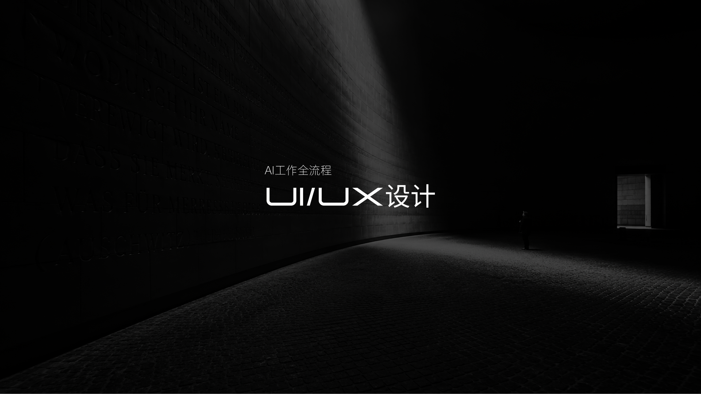
UI/UX设计——AI工作流
官网版本更新-实习项目
Design a better life

官网版本更新-实习项目
About Me
Calm, precise, expressive.
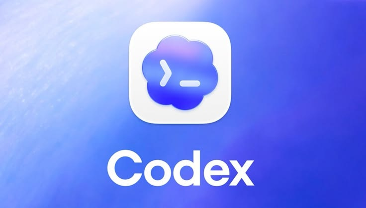
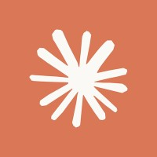
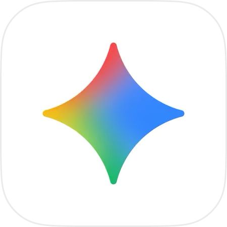
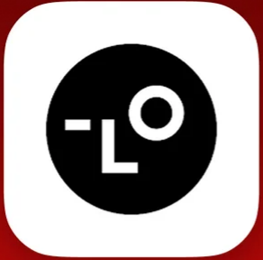
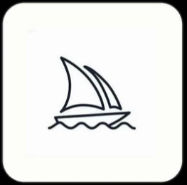
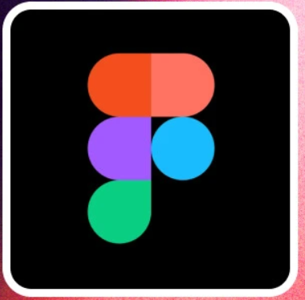
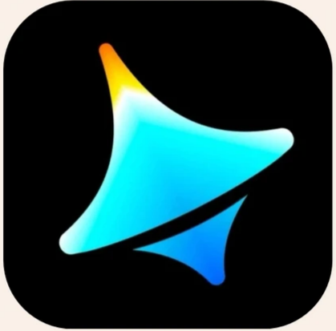
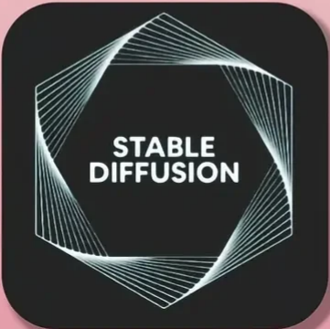


视觉设计
可以复现的视觉设计工作流。
视觉设计
可以复现的视觉设计工作流。
视觉设计
可以复现的视觉设计工作流。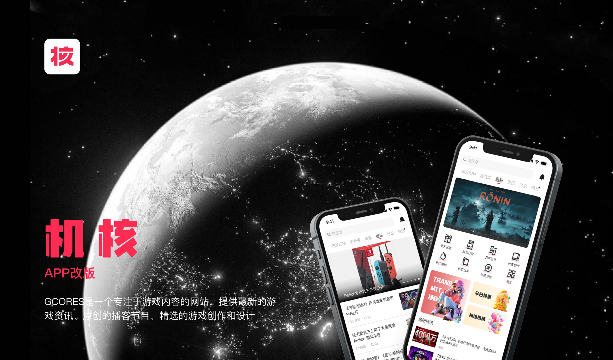
UI/UX设计
风格优化
UI/UX设计
市场需求及数据传输重点的设计
AI训练
美学语言转化为可复用的AI创作模组理解问题的本质，构建清晰的方向，
让设计为目标服务。
建立可扩展的视觉与体验系统，
让创意在秩序中自由生长。
关注人的感受与情绪连接，
让设计在功能之外传递价值。
用数字，证明专业与结果。
电话/微信同号+86 188 546 20388
意向base中国 · 深圳 · 杭州
About Me
Calm, precise, expressive.
2026届毕业应届生，从2024年12月开始共累计实习477天，先后围绕AI应用及技术在视觉、UI、UX岗位实践。了解前沿技术发展并实际应用产出，掌握 Codex、Cloud、Figma 等15+项AI应用及设计应用，累计产出150+需求，同比提效28%。
下载简历电话：18854620388
邮箱：1259307438@qq.com
微信：lcz18854620388
生日：2004.01.01
学校：湖北大学。
记者团行政事务部主任(39届）
校团宣综合事务部主任（14届）
思睿习院 行政事务部部长
设计学类 2204班班长
2023 HKDADC香港数字艺术设计大赛（秋季赛）二等奖（2023）
院级优秀学生干部（2023)
理解问题的本质，构建清晰的方向，
让设计为目标服务。
建立可扩展的视觉与体验系统，
让创意在秩序中自由生长。
关注人的感受与情绪连接，
让设计在功能之外传递价值。

官网版本更新-实习项目
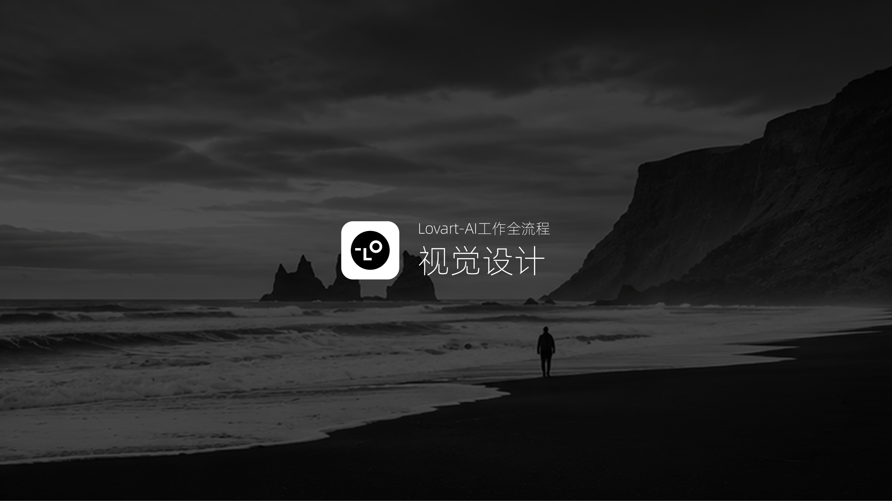
视觉设计
可以复现的视觉设计工作流。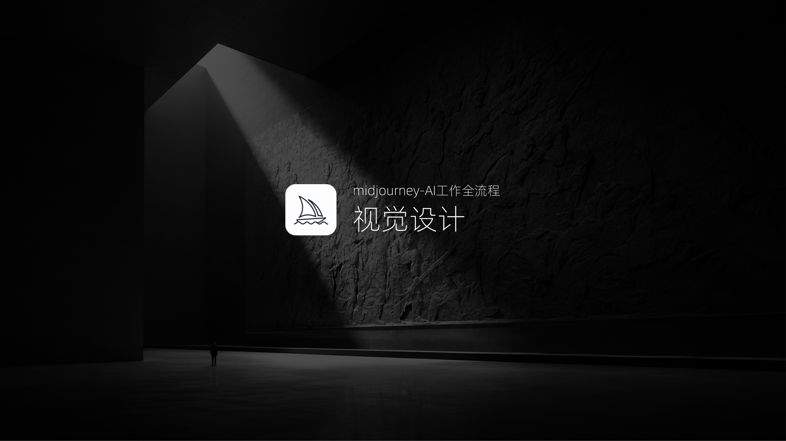
视觉设计
可以复现的视觉设计工作流。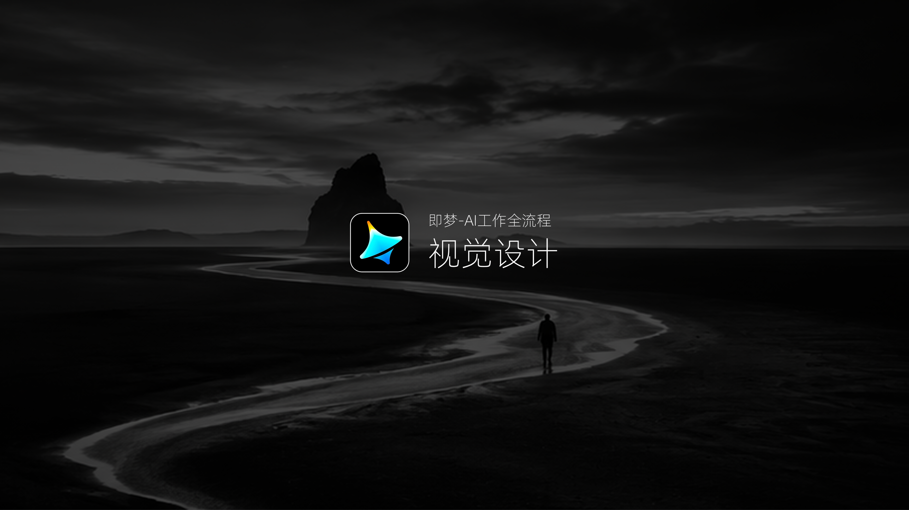
视觉设计
可以复现的视觉设计工作流。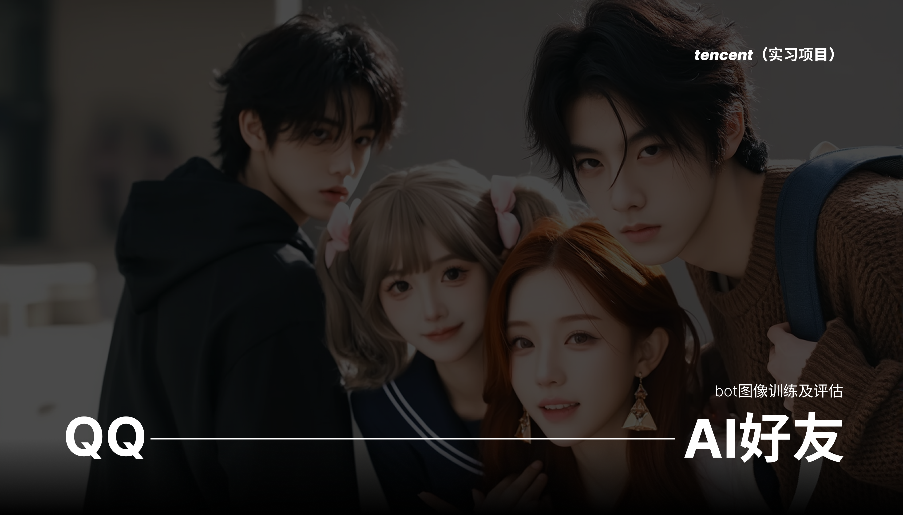
实习项目
多模态数字人好友，聊天伴侣。UI/UX设计
风格优化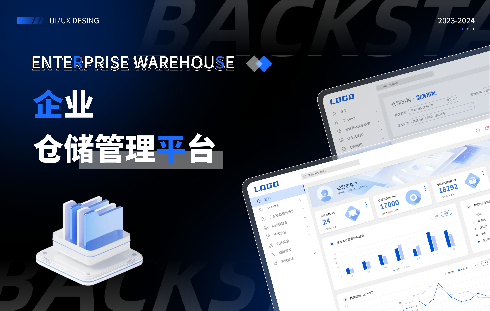
UI/UX设计
市场需求及数据传输重点的设计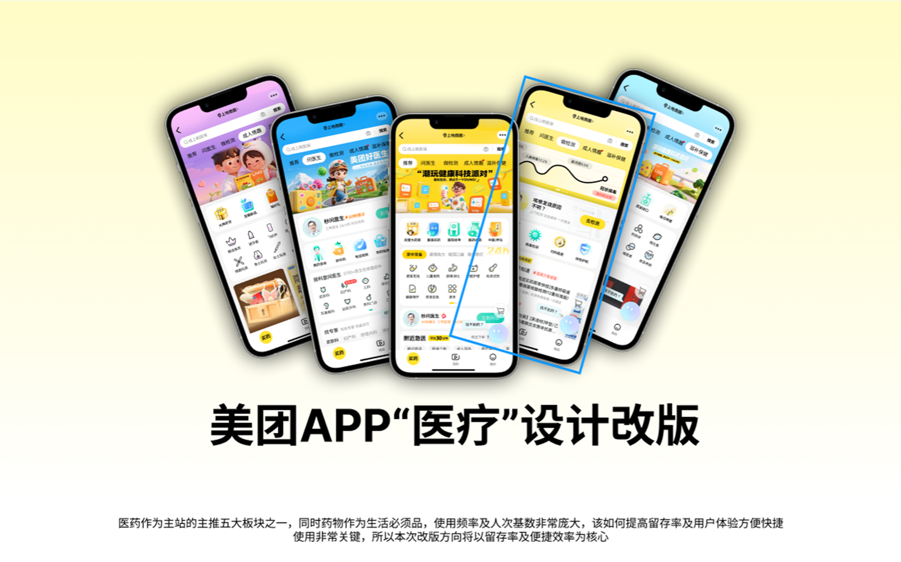
UI/UX设计
为科技探索品牌打造动态视觉系统。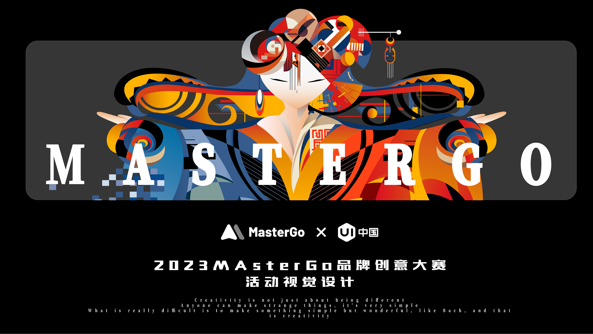
视觉设计
创作品牌相契合设计推广创意提出创意方案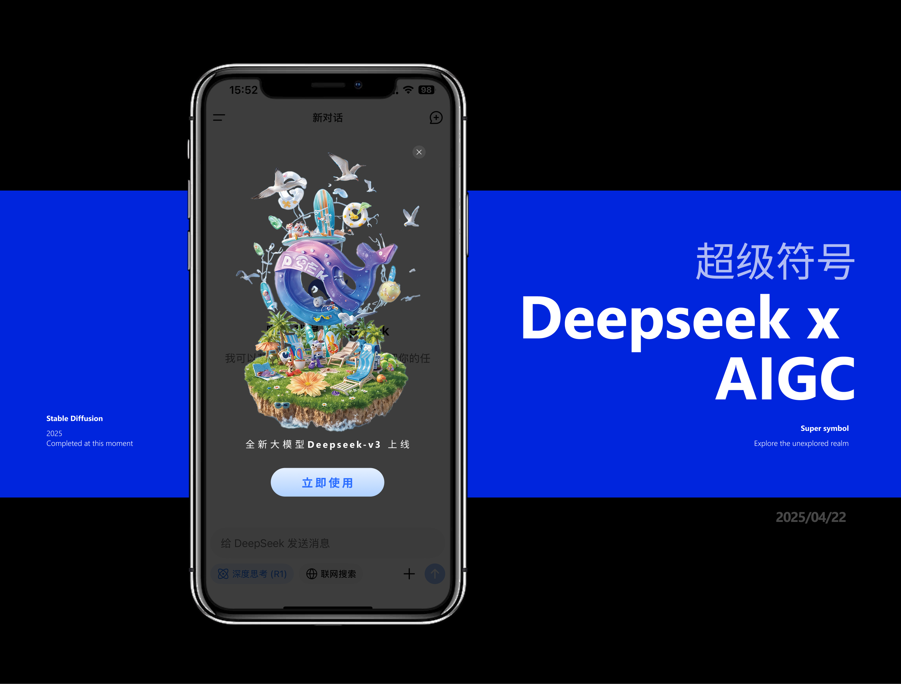
AI训练
app中的个性化内容少的问题增加个性设计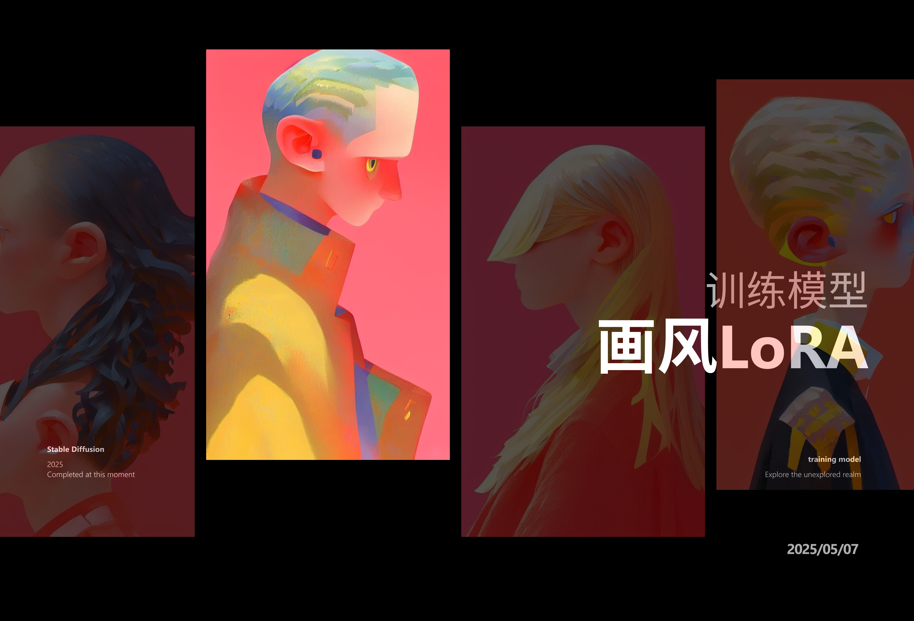
AI训练
美学语言转化为可复用的AI创作模组Project Detail